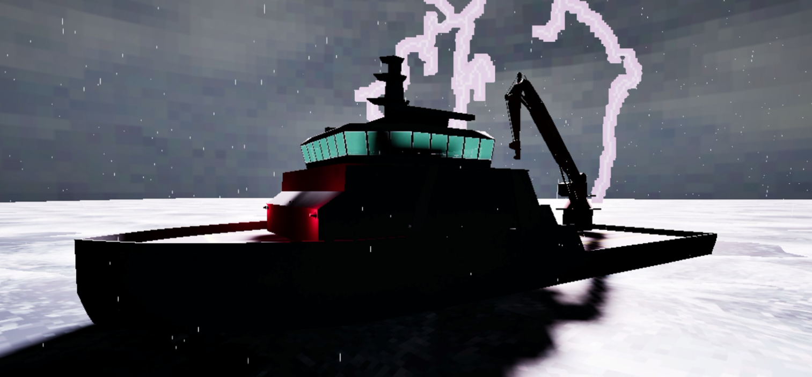

Henry Tripp Barrick
Ship Game
ART SECTION
The artstyle of this game was all stylized, using that grungy pixel PSX style. I made heavy use of the Pixl8r 2 filter, as all 3D assets were made using this. most assets were also very low poly to accomodate this, ranging from between 100 - 300 tris.
Some of the more complicated assets, such as enemies tended to range in the ~2,500 tri range.
One of these asseets is the Diver enemy, ending up with a tri count of 2,390.

The Diver enemy really came to life when adding in the light source emitting from the front of it's head.

For art direction, one image I really wanted to capture was that of lightning flashing against the ship. Getting that dramatic imagery was important for setting the isolated tone of the game.
I also used red an almost sickening amount for the interior of the ship. I am a fan of garish uses of color painting the interior red with emergency lights I think helped add to the atmosphere as well.
The only times red light was not used inside was for these flashing lights, which had a nice enough effect of turning off then flickering back on to keep. They also provided a nice visual break without necessarily interrupting the tone of the ship too.
This was also my first time working in Unreal Engine. Visual scripting is something that I'm not entirely a fan of due to learning coding in a line by line format but I got decently familiar with it over the course of this project.
There's some aspects of UE5 I enjoy such as Behavior Trees but others I don't. File size is a big one, having simulatenously worked with Godot where our uncompressed project is only ~100 mb.